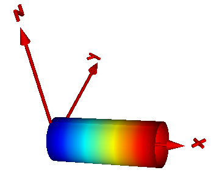
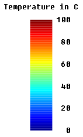

pipeWithScalarFieldFunction defining the surface characteristic of a pipe where a scalar field value is displayed with color along the pipe axis |
|
Information
This information is part of the Modelica Standard Library maintained by the Modelica Association.
Function pipeWithScalarField computes the X, Y, Z and C arrays in order to visualize a pipe and a scalar field along the pipe axis with model PipeWithScalarField. The latter is shown by mapping scalar field to color values with a color map and utilizing this color at the perimeter associated with the corresponding axis location. Typically the scalar field value is a temperature, but might be also another quantity. Predefined color maps are available from MultiBody.Visualizers.Colors.ColorMaps and can be selected via input argument "colorMap". A color map with the corresponding scalar field values can be exported as vector-graphics in svg-format with function MultiBody.Visualizers.Colors.colorMapToSvg. An example is shown in the next figure:

The color coding is shown in the next figure. It was generated with Mechanics.MultiBody.Visualizers.Colors.colorMapToSvg using the following call:
colorMapToSvg(Modelica.Mechanics.MultiBody.Visualizers.Colors.ColorMaps.jet(),
height=50, nScalars=6, T_max=100, heading="Temperature in C");

Syntax
Inputs (10)
| nu |
Type: Integer Description: Number of points in u-Dimension |
|---|---|
| nv |
Type: Integer Description: Number of points in v-Dimension |
| multiColoredSurface |
Default Value: true Type: Boolean Description: = true: Color is defined for each surface point |
| rOuter |
Type: Radius (m) Description: Outer radius of cylinder |
| length |
Type: Length (m) Description: Length of cylinder |
| xsi |
Type: Position[:] (m) Description: Relative position along the pipe with x[1] = 0, x[end] = 1 |
| T |
Type: Real[size(xsi, 1)] Description: Scalar field value at position xsi*length |
| T_min |
Type: Real Description: T <= T_min is mapped to colorMap[1,:] |
| T_max |
Type: Real Description: T >= T_max is mapped to colorMap[end,:] |
| colorMap |
Type: Real[:,3] Description: Color map to map scalar T to a corresponding color |
Outputs (4)
| X |
Type: Position[nu,nv] (m) Description: [nu,nv] positions of points in x-Direction resolved in surface frame |
|---|---|
| Y |
Type: Position[nu,nv] (m) Description: [nu,nv] positions of points in y-Direction resolved in surface frame |
| Z |
Type: Position[nu,nv] (m) Description: [nu,nv] positions of points in z-Direction resolved in surface frame |
| C |
Type: Real[if multiColoredSurface then nu else 0,if multiColoredSurface then nv else 0,3] Description: [nu,nv,3] Color array, defining the color for each surface point |